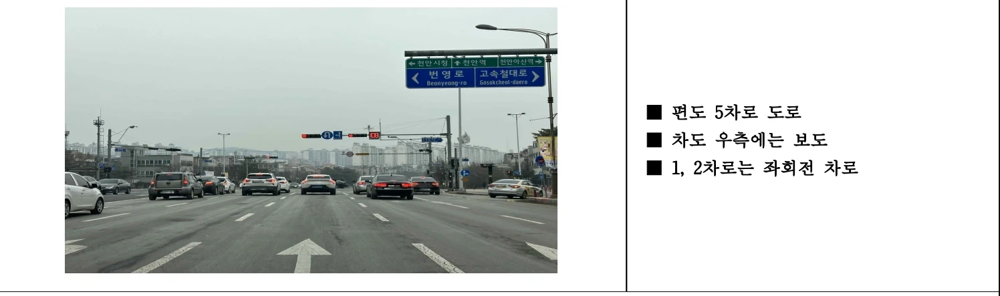

687. Which of the following are inappropriate ways to drive in the given situation? (Select TWO)

- ①If intending to turn left, the bicycle rider must wait for the left-turn signal in the first lane.
- ②If intending to turn left, the personal mobility device (PMD) driver must wait for the left-turn signal in the second lane.
- ③If intending to turn left, the two-wheeled vehicle driver must wait for the left-turn signal in the second lane.
- ④If intending to turn right, the passenger vehicle driver must turn right while paying attention to pedestrians.
- ⑤If intending to turn right, the truck driver must use the right edge of the road in advance to turn right.
Show answer
Answer
① If intending to turn left, the bicycle rider must wait for the left-turn signal in the first lane.
② If intending to turn left, the personal mobility device (PMD) driver must wait for the left-turn signal in the second lane.
Reference
When drivers of bicycles, etc. wish to turn left at an intersection, they must first move to the right edge of the road, drive slowly, and turn left using the edge of the intersection (Road Traffic Act, Article 25, Paragraph 3). “Bicycles, etc.” refers to bicycles and personal mobility devices (Road Traffic Act, Article 2, Article 21-2).
Reference text is a machine translation for study.